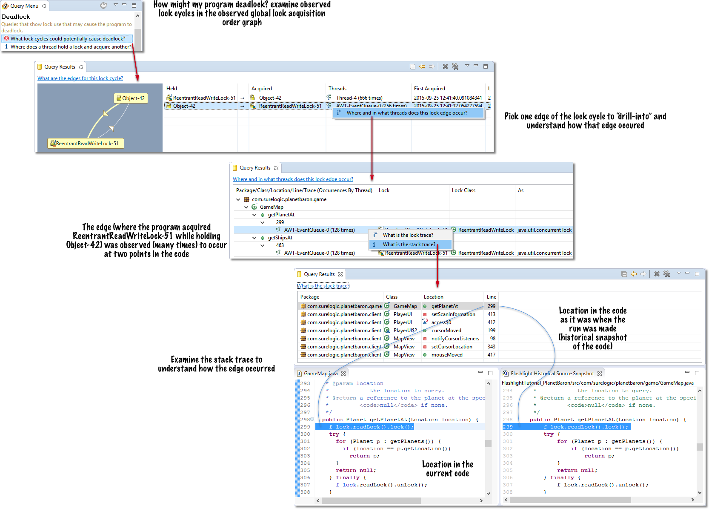

Flashlight: Shine light on the concurrency in your programs
Flashlight watches your running Java programs and Android apps. The tool collects a wealth of concurrency-focused data that can help you uncover performance and correctness problems in your code as well as better understand its behavior. Flashlight uses a suite of dynamic analyses to address questions related to shared state, use of locks, use of threads, potential deadlock, waits and blockages, false sharing, and many other properties.
What can Flashlight do for you? After a short run of your program or app, Flashlight helps you
• Discover if your program can deadlock (even if it hasn't yet)
• Discover it your program contains race conditions
• Understand what state is shared between threads in your program
• Understand how threads are used in your program
• Understand how locks are used in your program
• Uncover concurrency-related performance bottlenecks such as lock contention & false sharing
• Uncover violations of the Java memory model that can cause data corruption in production environments
Flashlight is designed to be your "concurrency-focused debugger/profiler" and is straightforward to use. Simply launch your program with Flashlight, exercise it, and then examine the results using a rich "drill-in" query interface.
Flashlight allows you to "drill-in" to query results. The tool gets you from a high-level finding, such as a potential deadlock, to associated code-level information, such as a stack trace, in just a few clicks.
Videos
The videos below show Flashlight in use. Often on widely used open source and commercial software. These videos give a sense of Flashlight's capabilities and how you interact with it in Eclipse. (Note that some of the videos might have been shot with an older version of the tool so please consult the documentation if something looks different.) The Flashlight user guide contains further documentation including a quick start, tutorials, and reference information. You can ask questions about Flashlight use on our forum.
Using SureLogic Flashlight to uncover a race condition in the TomDroid Android app
Using SureLogic Flashlight to uncover a real-world race condition in the production TomDroid Android app. The use of Flashlight with a tethered Android device (a Nexus 4 phone) is demonstrated. This video shows how to use the query interface to uncover a concurrency bug.